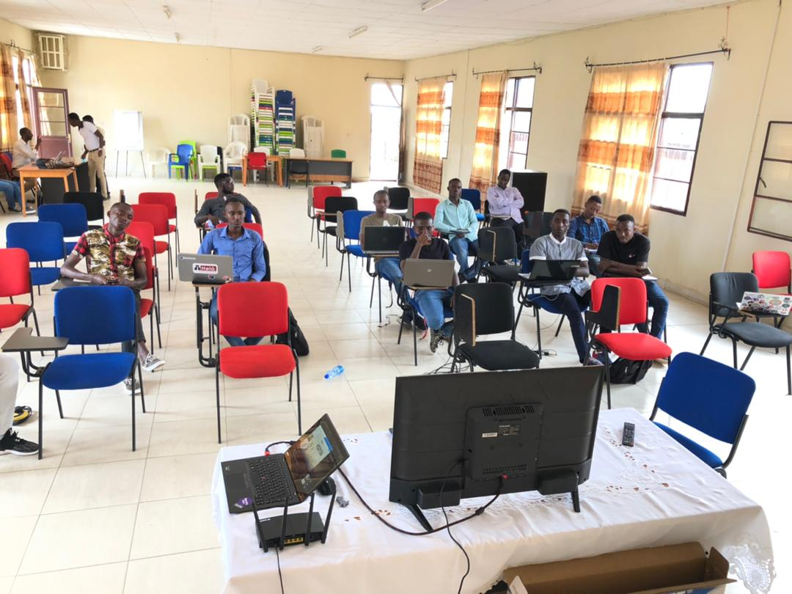

Mwingwa Arthur :
Fondateur et CEO de
MINA SOFT
Mwingwa Arthur ""Le développement par la technologie""
IL fait partie des hommes formées par Glice Burundi, cette entreprise que vous avez surement tous connu grace au Robot qui aide dans le lavage des mains
qu'il vient de mettre en place.
Plus sérieusement, je suis développeur web, je fais de la programmation back-end et front-end, et de la configuration et gestion de serveurs.
Mon job est donc de créer des produits pour le web: cela peut aller d'une simple page victrine à une application web.
Quelle est l'importance de ton métier dans l'univers de l'informatique et du web
En tant que développeur web, je suis impliqué de la conception à la finalisation du produit.
Je fait en sorte de résoudre le problème ou le besoin initiale du client, en mettant en place des outils et/ou en développant des site et des applications.
Qu'est- ce qui t'a motivé à devenir développeur
J'ai toujours été passionné par l'informatique en général, en fait je suis tombé dedans petit. Aujourd'hui je fait mon métier par passion et parce que j'aime concevoir des choses, et autant qu'elles soient utiles et résolvent des problèmes!L 'univers de l'informatique et du web tend à occuper une place de plus en plus importante pour les entreprise et les particuliers, quelle que soit leur activité. En ce sens, penses -tu que le métier de développeur est un métier d'avenir?
Sans aucun doute! Tous les domaines peuvent etre aidés par des outils informatiques sous une forme ou un autre :
application web ou mobile, sur le terrain ou au bureau , pour desgestionnaires, pour aider à la planification, extraire des statistiques pour mieux prendre des décisions ...
l y a quelque temps, j’avais remarqué que plusieurs sociétés, qui ne sont pas des sociétés de service informatique, se constituaient des équipes de développement en interne. Je ne peux qu’imaginer qu’ils se développaient leurs propres outils informatiques. D’autres sociétés préfèrent déléguer ces prestations en externe, ou encore acheter des outils du marché. Dans tous les cas, les entrepreneurs réalisent ce que peuvent leur apporter les outils, et les développeurs ont de beaux jours devant eux.
Y a-t-il beaucoup d’opportunités d’emploi dans ton domaine ? A l’inverse, y a-t-il beaucoup de développeurs qui éprouvent des difficultés à trouver un job qui correspond à leurs qualifications ?
Oui, il y a beaucoup de demandes pour des développeurs, ayant des compétences full stack ou autre (front-end, mobile…). Il suffit de jeter un œil à CareerHub pour le voir ! Il y a plusieurs sociétés étrangères qui ont ouvert des antennes localement ces dernières années, et celles qui se construisent des équipes de développement en interne recherchent souvent des profils full stack, capables de porter des projets et/ou encadrer des équipes techniquement. Des développeurs qui ne trouvent pas de travail, j’ai l’impression que c’est plus rare. Je vois passer beaucoup de CV (dont certains sont récurrents depuis 2010 !) où je constate que les compétences de la personne ne sont pas adaptées aux méthodes et aux outils de développement moderne, demeurant souvent assez « scolaire » (cela se comprend pour un frais moulu de l’université, pas pour quelqu’un avec 2-3 ans de métier… ou alors ils ont du mal à rédiger des CV).Tout ça pour dire qu’il est plus probable que ce soit les qualifications d’une personne qui ne sont pas en adéquation avec le marché. Ce n’est pas une fatalité, il suffit de savoir chercher.
